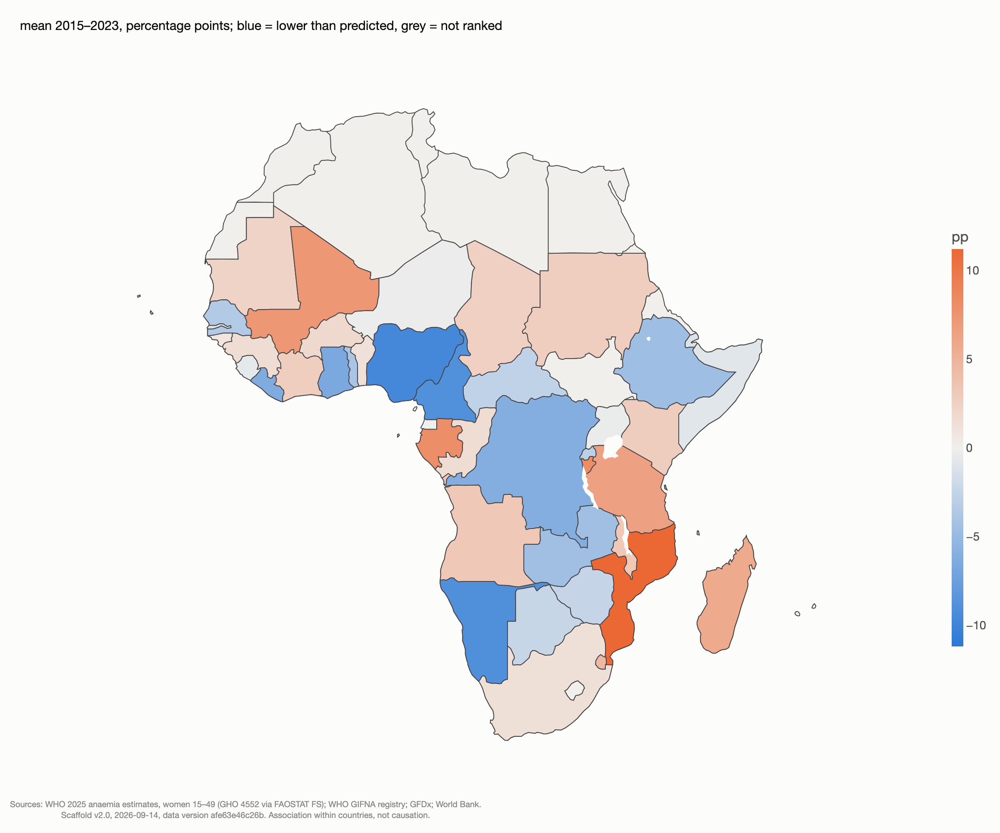

How we did it, and why
This page explains each decision in the order the pipeline makes it: which data, how it becomes one table, what the policy dose is, what the model compares, which checks surround it, and how to read a null honestly. The numbers are the scaffold's v2.0 results (data version afe63e46c26b); the bracketed tags name the stats key that holds each one.
1 · Why this question, and why sub-Saharan Africa
The datathon's Eat track asked how food systems reach people. We chose the last mile that is measured in blood: anaemia in women aged 15 to 49, which shapes pregnancy outcomes and the first thousand days of a child's life. The question is whether a country's record of nutrition policy moves that rate. Sub-Saharan Africa was the region with the broadest country coverage across our sources (46 of 48 countries in the first pass) and, independently, where a concern score over 194 countries pointed: three of the five most concerning countries are in it.
2 · Sources and provenance
Every input is pinned: either a file downloaded once and recorded with its URL, download time and SHA-256 in a provenance file next to it, or a committed pull script that regenerates the file from an API and writes the same record. The panel's manifest hashes all of them.
| Dataset | Organisation | What it gives the panel | Release or pull |
|---|---|---|---|
| Anaemia in women 15–49 (modelled estimates, GHO indicator 4552) | WHO, republished in FAOSTAT's Suite of Food Security Indicators | The main outcome | FAOSTAT July 2026 release, cached |
| Women's nutrition database | UNICEF (WHO anaemia; NCD-RisC weight) | Anaemia in pregnant and all women, underweight, overweight; the concern score | August 2025 workbook |
| Food security suite: low birthweight, stunting, wasting, exclusive breastfeeding | FAOSTAT | Child outcomes used as swaps and descriptives | July 2026 release |
| Cost and affordability of a healthy diet; food insecurity (FIES, 3-year averages) | FAOSTAT | Sub-period controls | CAHD 7S2026; FIES July 2026 |
| Child mortality (neonatal, infant, under-five) | UN IGME | Descriptive outcomes | 2025 round |
| GDP per capita, constant 2015 US$; malaria incidence, fertility, urbanisation, HIV, sanitation, employment, health spending, hospital beds | World Bank WDI | Income and context controls | API pulls, September 2026, by committed scripts |
| Policy, programme and mechanism registries (three files) | WHO GIFNA | The policy dose and every alternative exposure | Per-country downloads, 3–5 September 2026 |
| Fortification legislation years | Global Fortification Data Exchange | The wheat-flour mandate event | Dataset snapshot |
| Surveys measuring women's haemoglobin | The DHS Program (API) | The survey-anchor flag | API pull, September 2026 |
| Preventive chemotherapy coverage, soil-transmitted helminths | WHO PCT databank | The one delivered-coverage series; an implementation contrast | Workbook updated November 2025 |
| Terrain ruggedness, tropical share, distance to coast | Nunn & Puga (2012) | Context for the ranking | Public dataset |
3 · The panel
One script assembles a complete grid of 49 countries by 26 years (2000–2025), 174 columns: three keys, 13 outcomes and 158 features. It joins on ISO codes, never on names; it refuses duplicate keys, gaps that are not declared, and any input that changes the grid. Nothing is imputed: a missing value stays missing, and a readiness table records which series is missing for which countries. Only 39 columns enter a model; the rest are the team's exploratory material and the alternatives the checks need. [01_frame→estimation_sample: 994 country-years, 2003–2023] The flow diagram on the at-a-glance page follows each source into the panel and each column into the models, with a table of what went into each model.
4 · The policy dose
The registry's three files (policies, programmes and actions, mechanisms) are read directly. Each record's controlled fields (policy topics; programme theme, topic, target group and micronutrient; mechanism topics and type) are matched, token by token, against a table of 47 patterns sorted into 11 topic clusters. Free text is never read, so language is not an issue, and a record is counted once per cluster. Records are dated from their start and end years; programme rows without a date are the survey-questionnaire snapshots of 2009–10 and 2016–17, so the dose is policies in force, dated, in the anaemia cluster. Across the region that count rose from 17 in 2000 to 158 in 2023, in 45 countries. The team's 76-column feature table, log and ever-adopted forms, all-file counts and an all-topic count are carried as alternative exposures.

5 · The model
Each country is compared with itself over time. Anaemia in country i and year t is regressed on a country effect, a year effect, the policy dose three years earlier and log income, with standard errors clustered by country and a wild cluster bootstrap alongside. The country effect removes each country's level (geography, health system, malaria burden); the year effect removes what hit all 49 at once (price spikes, the pandemic, revisions to the WHO estimates). The number we want is the within-country association between the dose and anaemia. The identifying assumption for reading it as more than association is that, absent the policy, adopters and comparison countries would have moved in parallel; we state it and test it, we do not assume it. The smallest effect worth finding, one percentage point of anaemia per within-country standard deviation of the dose, was fixed before the results were read. [02_fe→spec_A: −0.209, 95% CI −0.623 to +0.204, p 0.32, wild bootstrap p 0.33]
6 · The ladder of checks
| Row | What it guards against | pp per policy | 95% interval |
|---|---|---|---|
| Main: two-way fixed effects, 3-year lag | the baseline | −0.21 | −0.62 to +0.20 |
| Lag 2 years · lag 5 years | the lag being a lucky choice | −0.25 · −0.16 | both span zero |
| Income in current US$ | the income measure | −0.15 | −0.53 to +0.23 |
| Lead test: policy 3 years later | reverse timing: a lead that "predicts" today's anaemia signals trend or targeting | −0.34 | −0.66 to −0.03 |
| A linear trend per country | slow drifts; note that trends also absorb slow real effects | −0.02 | −0.13 to +0.09 |
| First differences · lagged outcome | the fixed-effects and lagged-outcome estimates bracket the effect under their respective assumptions | −0.01 · −0.02 | both span zero |
| Malaria, fertility, urbanisation, HIV, sanitation, unemployment | the anaemia literature's drivers and the team's confounders | −0.05 to −0.22 | all span zero |
| Delivered deworming coverage as the exposure | a delivery series instead of a paper one | +0.001 per pp | spans zero |
| Survey-anchored years only | the outcome being a model rather than a measurement | −0.04 | −0.61 to +0.54 (n 80) |
| Outcome swaps: pregnant-women anaemia, underweight, overweight, low birthweight, a women's index | the result being specific to one series; p-values adjusted across the five | all near zero | adjusted p 0.80 |
[02_fe→sensitivity, subsample, outcome_swaps]
7 · Event studies
The ladder asks about the dose; the event studies ask what happens around the first adoption. Two events: a country's first dated anaemia policy (31 adopters inside the window, 3 never-adopters, 15 excluded because they adopted before 2002) and its mandatory wheat-flour fortification law (26 adopters, 23 never). Three estimators, because staggered adoption breaks the naive one: the two-way fixed-effects event study, with the de Chaisemartin–D'Haultfœuille share of negative weights as its diagnostic; Gardner's two-stage difference-in-differences with a country cluster bootstrap; and the local-projections difference-in-differences of Dube, Girardi, Jordà and Taylor. Pre-period slopes are reported and subtracted. Around the first anaemia policy the naive estimator shows a post-adoption decline (−0.94, p 0.08) with a 27% negative-weight share and a pre-trend of the same sign; the two robust estimators give +0.10 and −0.08, both spanning zero. Around the wheat-flour mandate there is no pre-trend and no break. [02b_event]
8 · The bound and the specification curve
A null is only informative with a bound. Against the pre-specified smallest effect of interest, two one-sided tests reject effects that large (p 0.031): the 90% interval per policy runs from −0.56 to +0.14, so benefits larger than about half a point per policy are ruled out, and the minimum detectable effect at 80% power is 0.98 points per within-country standard deviation. Everything smaller is undetectable with this design; we say so. The specification curve re-runs 336 pre-specified combinations (seven exposure constructions × three lags × two income measures × two control sets × four estimators); the median is −0.02 points per within-country standard deviation and 7% of intervals exclude zero, most of them the trend-augmented rows. [02_fe→bounds; 02c_spec]
9 · Held-out prediction
Each country is predicted by a model fitted to the other 48, along its whole path, and the errors are pooled. Year effects alone bring the error from 2.50 to 1.91 points; income adds nothing; the policy dose adds nothing (1.92 → 1.93, a bootstrap interval that spans zero); the dose lowers a country's own error in 22 of 49, chance. If policy carried a signal that transfers across countries, this is where it would show. [03_loco]
10 · The context ranking
To ask who beats the odds, the odds have to be stated. Income alone explains 6% of the differences in levels; a model with year effects, log income, malaria incidence, fertility, urbanisation, basic sanitation, UNICEF sub-region and terrain explains 81%. The ranking is the residual from that model averaged over 2015–2023, for the 45 countries with enough coverage. It disagrees with the income-only ranking (Spearman 0.27), which is the point: Rwanda and Ethiopia lead the income ranking because their income is low, and sit mid-table once their context is in. The eight countries below their prediction and the eight above have indistinguishable policy records on every exposure. This is a screening device for qualitative follow-up, not a verdict on any country. [04_residuals]

11 · The concern score
The team's concern score flags each of four indicators (anaemia in pregnant women, anaemia in all women, underweight, overweight) with 0 if the country improved, 1 if it started in the worst quarter, 2 if it worsened, adds the country's percentile, and averages. The scaffold reproduces it on the 49 countries and checks its sensitivity to the weights over 500 random draws: the equal-weight ranking and the median random-weight ranking agree at Spearman 0.997. [08_concern]
12 · What not to conclude
- Association within countries, never causation. The lead test shows adoption follows trends; the null is a bound, not proof that policies do nothing.
- The outcomes are modelled estimates. WHO's anaemia model uses the Socio-Demographic Index, meat supply and mean BMI as covariates; only 33 of the 49 countries have a haemoglobin survey in the window (83 country-years). The survey-anchored row is the honest check, and it is underpowered.
- The registry measures reporting. Counts of policies say what governments wrote and filed, not what was delivered; the coverage field is empty and three in four programme records carry no date.
- Within-country variation is small (standard deviation about 2.8 points against 11 between countries), which is why the design reports a bound and why the between-country context story is the strong one.
- Absorbing "ever adopted" indicators are fragile: they flip sign when country trends are added; the event studies are the check that holds.
13 · References
de Chaisemartin, C., & D'Haultfœuille, X. (2020). Two-way fixed effects estimators with heterogeneous treatment effects. American Economic Review, 110(9). · Gardner, J. (2022). Two-stage differences in differences (arXiv:2207.05943). · Dube, A., Girardi, D., Jordà, Ò., & Taylor, A. M. (2023). A local projections approach to difference-in-differences event studies (NBER WP 31184). · Wolfers, J. (2006). Did unilateral divorce laws raise divorce rates? American Economic Review, 96(5), on unit trends absorbing phased-in effects. · Lakens, D. (2017). Equivalence tests: a practical primer. Social Psychological and Personality Science, 8(4). · Simonsohn, U., Simmons, J. P., & Nelson, L. D. (2020). Specification curve analysis. Nature Human Behaviour, 4. · Nunn, N., & Puga, D. (2012). Ruggedness: the blessing of bad geography in Africa. Review of Economics and Statistics, 94(1). · WHO (2025), anaemia estimates in women of reproductive age, Global Health Observatory.